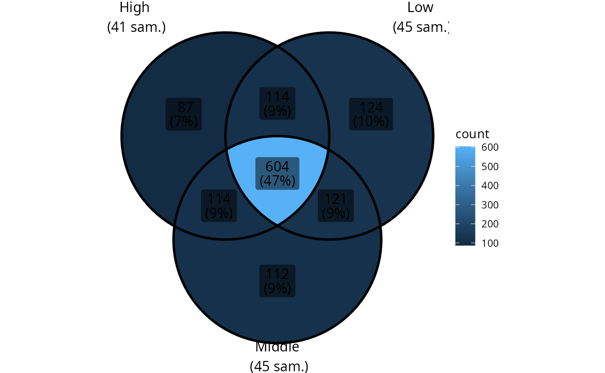
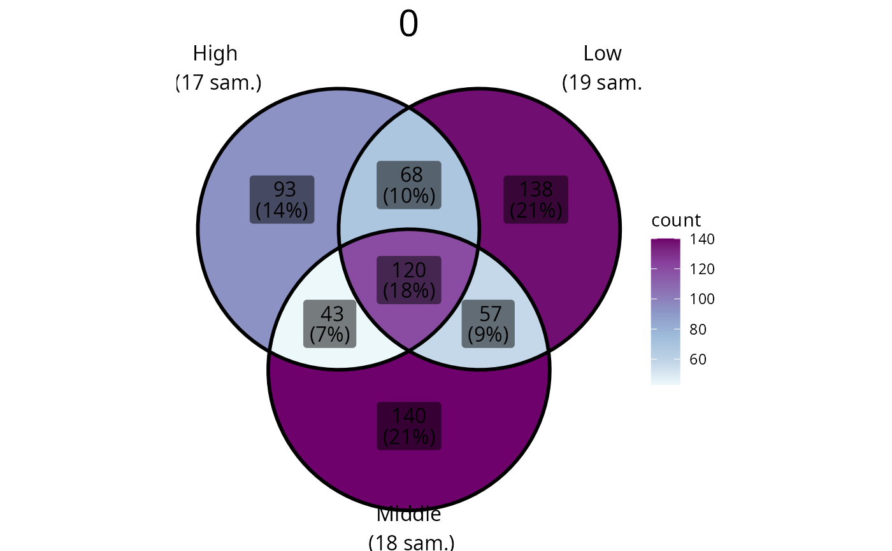
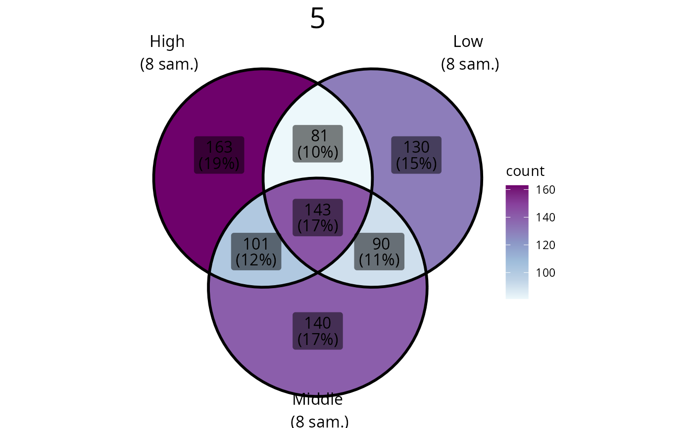
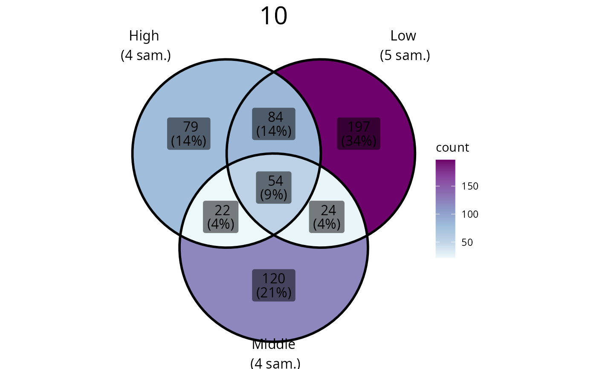
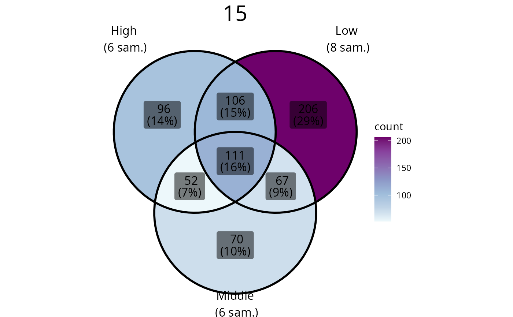
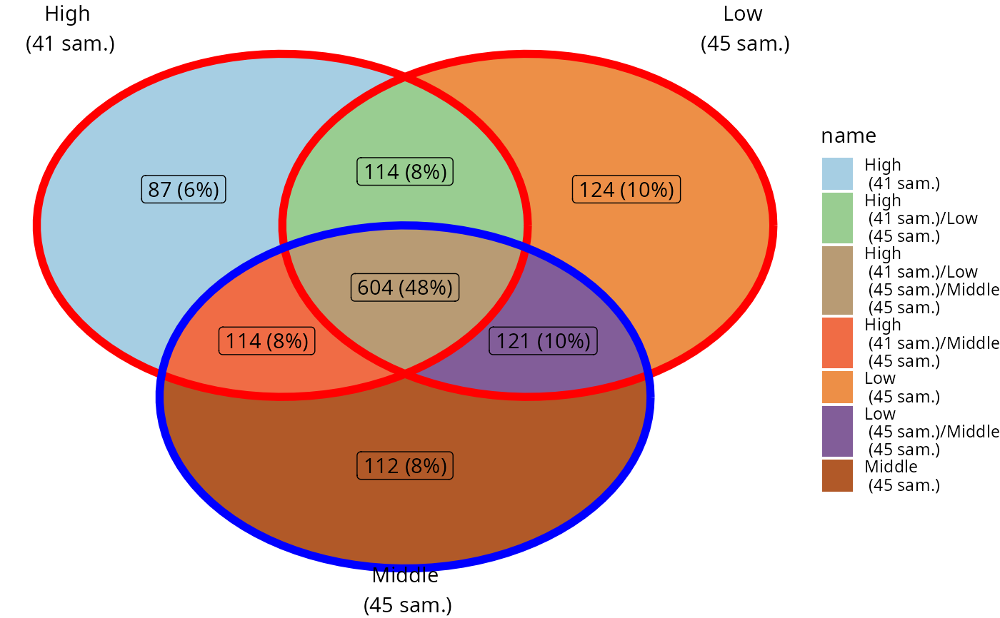

Venn diagram of phyloseq-class object using ggVennDiagram::ggVennDiagram function
Source: R/plot_functions.R
ggvenn_pq.Rd
Note that you can use ggplot2 function to customize the plot
for ex. + scale_fill_distiller(palette = "BuPu", direction = 1)
and + scale_x_continuous(expand = expansion(mult = 0.5)). See
examples.
Usage
ggvenn_pq(
physeq = NULL,
fact = NULL,
min_nb_seq = 0,
taxonomic_rank = NULL,
split_by = NULL,
add_nb_samples = TRUE,
add_nb_seq = FALSE,
rarefy_before_merging = FALSE,
rarefy_after_merging = FALSE,
return_data_for_venn = FALSE,
verbose = TRUE,
type = "nb_taxa",
na_remove = TRUE,
...
)Arguments
- physeq
(required): a
phyloseq-classobject obtained using thephyloseqpackage.- fact
(required): Name of the factor to cluster samples by modalities. Need to be in
physeq@sam_data.- min_nb_seq
minimum number of sequences by OTUs by samples to take into count this OTUs in this sample. For example, if min_nb_seq=2,each value of 2 or less in the OTU table will not count in the venn diagram
- taxonomic_rank
Name (or number) of a taxonomic rank to count. If set to Null (the default) the number of OTUs is counted.
- split_by
Split into multiple plot using variable split_by. The name of a variable must be present in
sam_dataslot of the physeq object.- add_nb_samples
(logical, default TRUE) Add the number of samples to levels names
- add_nb_seq
(logical, default FALSE) Add the number of sequences to levels names
- rarefy_before_merging
Rarefy each sample before merging by the modalities of args
fact. Usephyloseq::rarefy_even_depth()function- rarefy_after_merging
Rarefy each sample after merging by the modalities of args
fact.- return_data_for_venn
(logical, default FALSE) If TRUE, the plot is not returned, but the resulting dataframe to plot with ggVennDiagram package is returned.
- verbose
(logical, default TRUE) If TRUE, prompt some messages.
- type
If "nb_taxa" (default), the number of taxa (ASV, OTU or taxonomic_rank if
taxonomic_rankis not NULL) is used in plot. If "nb_seq", the number of sequences is plotted.taxonomic_rankis never used if type = "nb_seq".- na_remove
(logical, default TRUE) If set to TRUE, remove samples with NA in the variables set in
factparam- ...
Other arguments for the
ggVennDiagram::ggVennDiagramfunction for ex.category.names.
Value
A ggplot2 plot representing Venn diagram of
modalities of the argument factor or if split_by is set a list
of plots.
Examples
if (requireNamespace("ggVennDiagram")) {
ggvenn_pq(data_fungi, fact = "Height")
}
#> 54 were discarded due to NA in variable fact
#> Cleaning suppress 501 taxa and 0 samples.
#> Cleaning suppress 457 taxa and 0 samples.
#> Cleaning suppress 469 taxa and 0 samples.

# \donttest{
if (requireNamespace("ggVennDiagram")) {
ggvenn_pq(data_fungi, fact = "Height") +
ggplot2::scale_fill_distiller(palette = "BuPu", direction = 1)
pl <- ggvenn_pq(data_fungi, fact = "Height", split_by = "Time")
for (i in seq_along(pl)) {
p <- pl[[i]] +
scale_fill_distiller(palette = "BuPu", direction = 1) +
theme(plot.title = element_text(hjust = 0.5, size = 22))
print(p)
}
data_fungi2 <- subset_samples(data_fungi, data_fungi@sam_data$Tree_name == "A10-005" |
data_fungi@sam_data$Height %in% c("Low", "High"))
ggvenn_pq(data_fungi2, fact = "Height")
ggvenn_pq(data_fungi2, fact = "Height", type = "nb_seq")
ggvenn_pq(data_fungi, fact = "Height", add_nb_seq = TRUE, set_size = 4)
ggvenn_pq(data_fungi, fact = "Height", rarefy_before_merging = TRUE)
ggvenn_pq(data_fungi, fact = "Height", rarefy_after_merging = TRUE) +
scale_x_continuous(expand = expansion(mult = 0.5))
# For more flexibility, you can save the dataset for more precise construction
# with ggplot2 and ggVennDiagramm
# (https://gaospecial.github.io/ggVennDiagram/articles/fully-customed.html)
res_venn <- ggvenn_pq(data_fungi, fact = "Height", return_data_for_venn = TRUE)
ggplot() +
# 1. region count layer
geom_polygon(aes(X, Y, group = id, fill = name),
data = ggVennDiagram::venn_regionedge(res_venn)
) +
scale_fill_manual(values = funky_color(7)) +
# 2. set edge layer
geom_path(aes(X, Y, color = id, group = id),
data = ggVennDiagram::venn_setedge(res_venn),
show.legend = FALSE, linewidth = 2
) +
scale_color_manual(values = c("red", "red", "blue")) +
# 3. set label layer
geom_text(aes(X, Y, label = name),
data = ggVennDiagram::venn_setlabel(res_venn)
) +
# 4. region label layer
geom_label(
aes(X, Y, label = paste0(
count, " (",
scales::percent(count / sum(count), accuracy = 2), ")"
)),
data = ggVennDiagram::venn_regionlabel(res_venn)
) +
theme_void()
}
#> 54 were discarded due to NA in variable fact
#> Cleaning suppress 501 taxa and 0 samples.
#> Cleaning suppress 457 taxa and 0 samples.
#> Cleaning suppress 469 taxa and 0 samples.
#> 54 were discarded due to NA in variable fact
#> Cleaning suppress 501 taxa and 0 samples.
#> Cleaning suppress 457 taxa and 0 samples.
#> Cleaning suppress 469 taxa and 0 samples.
#> Cleaning suppress 335 taxa and 0 samples.
#> Cleaning suppress 276 taxa and 0 samples.
#> Cleaning suppress 299 taxa and 0 samples.
#> Cleaning suppress 360 taxa and 0 samples.
#> Cleaning suppress 404 taxa and 0 samples.
#> Cleaning suppress 374 taxa and 0 samples.
#> Cleaning suppress 341 taxa and 0 samples.
#> Cleaning suppress 221 taxa and 0 samples.
#> Cleaning suppress 360 taxa and 0 samples.
#> Cleaning suppress 343 taxa and 0 samples.
#> Cleaning suppress 218 taxa and 0 samples.
#> Cleaning suppress 408 taxa and 0 samples.
#> Two modalities differ greatly (more than x2) in their number of sequences (159635 vs 53355). You may be interested by the parameter rarefy_after_merging




#> Cleaning suppress 501 taxa and 0 samples.
#> Cleaning suppress 457 taxa and 0 samples.
#> Cleaning suppress 1366 taxa and 0 samples.
#> Two modalities differ greatly (more than x2) in their number of sequences (432919 vs 3961). You may be interested by the parameter rarefy_after_merging
#> Cleaning suppress 501 taxa and 0 samples.
#> Cleaning suppress 457 taxa and 0 samples.
#> Cleaning suppress 1366 taxa and 0 samples.
#> Two modalities differ greatly (more than x2) in their number of sequences (432919 vs 3961). You may be interested by the parameter rarefy_after_merging
#> 54 were discarded due to NA in variable fact
#> Cleaning suppress 501 taxa and 0 samples.
#> Cleaning suppress 457 taxa and 0 samples.
#> Cleaning suppress 469 taxa and 0 samples.
#> 54 were discarded due to NA in variable fact
#> You set `rngseed` to FALSE. Make sure you've set & recorded
#> the random seed of your session for reproducibility.
#> See `?set.seed`
#> ...
#> 1130OTUs were removed because they are no longer
#> present in any sample after random subsampling
#> ...
#> Cleaning suppress 173 taxa and 0 samples.
#> Cleaning suppress 157 taxa and 0 samples.
#> Cleaning suppress 156 taxa and 0 samples.
#> 54 were discarded due to NA in variable fact
#> You set `rngseed` to FALSE. Make sure you've set & recorded
#> the random seed of your session for reproducibility.
#> See `?set.seed`
#> ...
#> 157OTUs were removed because they are no longer
#> present in any sample after random subsampling
#> ...
#> Cleaning suppress 386 taxa and 0 samples.
#> Cleaning suppress 342 taxa and 0 samples.
#> Cleaning suppress 338 taxa and 0 samples.
#> 54 were discarded due to NA in variable fact
#> Cleaning suppress 501 taxa and 0 samples.
#> Cleaning suppress 457 taxa and 0 samples.
#> Cleaning suppress 469 taxa and 0 samples.

# }